Длина ковчега сопоставима с высотой 40-этажного здания, что обеспечивает значительный внутренний объём.
Конструкция выполнена из высокопрочных полимерных композитов нового поколения, прошедших:
• испытания на экстремально низкие температуры
• тесты на механические нагрузки и столкновения
Оболочка ковчега устойчива к:
• агрессивной солнечной радиации
• перепадам давления
• длительному контакту с водой
Каждый элемент конструкции рассчитан на многолетнюю эксплуатацию без критических потерь прочности.
ВНУТРЕННЯЯ СРЕДА
Внутреннее пространство ковчега разделено на функциональные зоны, формирующие полноценную городскую среду.
Несмотря на ограниченность ресурсов, приоритетом остаётся сохранение привычной структуры жизни:
движение, личное пространство, общественные зоны и доступ к природе.
ВНУТРЕННИЕ СЕКТОРЫ КОВЧЕГА
Коридоры
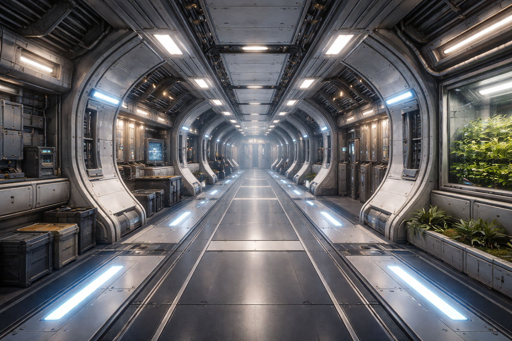
Основные транспортные артерии ковчега. Обеспечивают безопасное перемещение между секторами.
Жилые модули (квота-квартира)
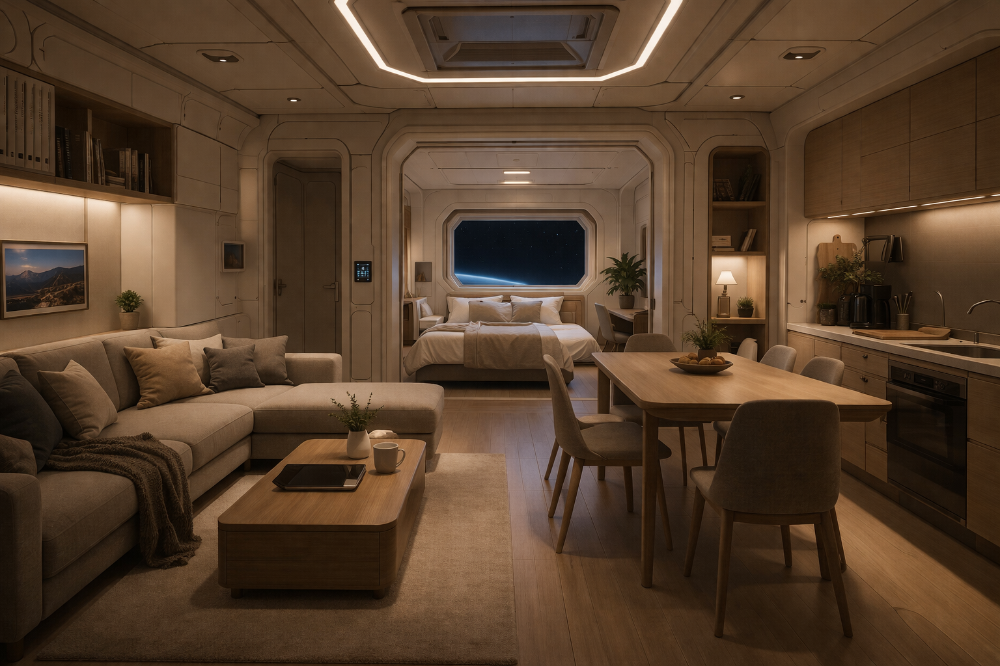
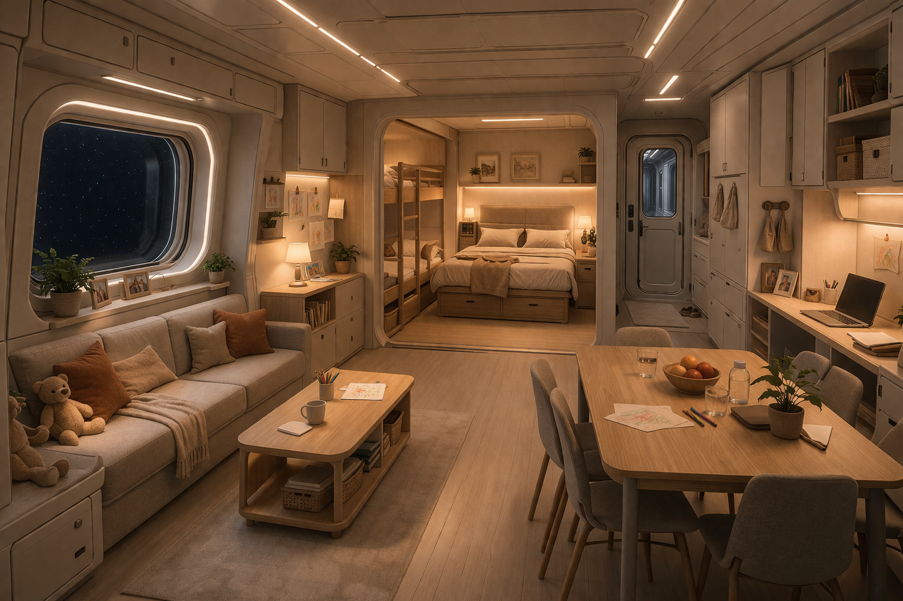
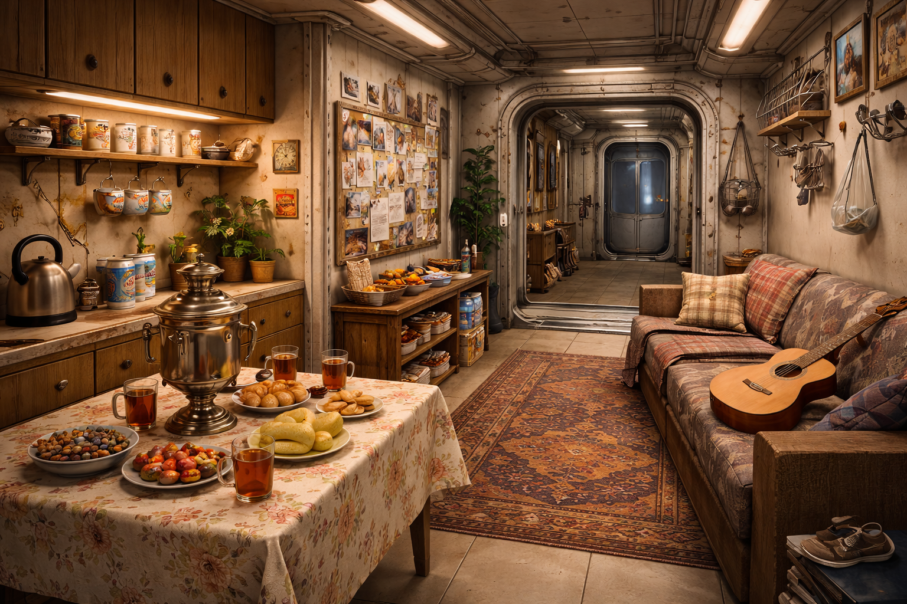
Индивидуальные жилые пространства с базовыми системами жизнеобеспечения и зонами отдыха.
Общественные площади
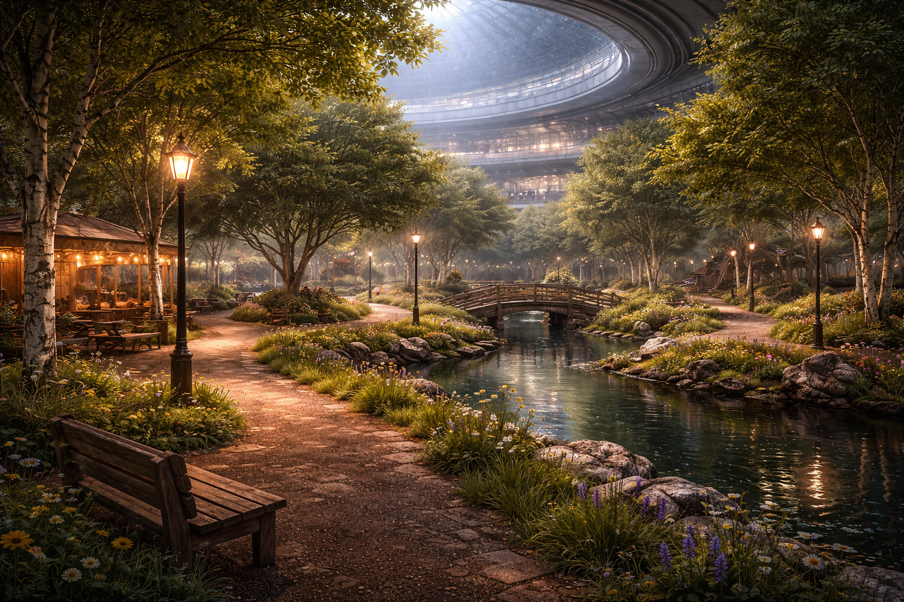
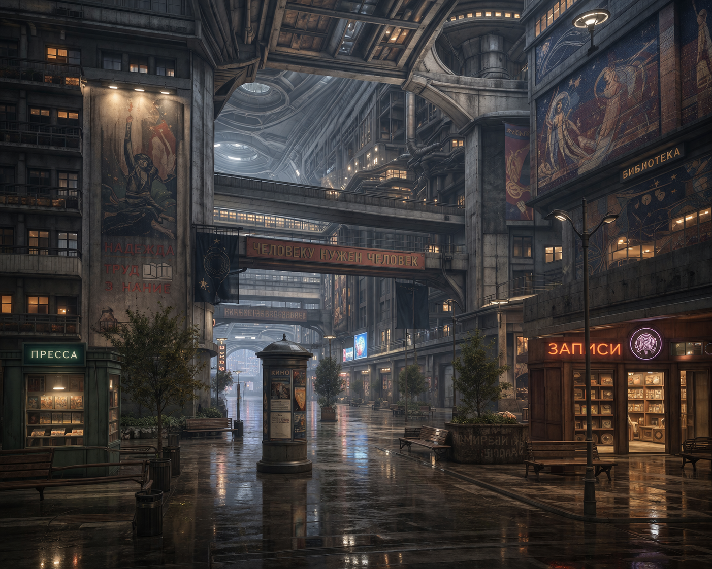
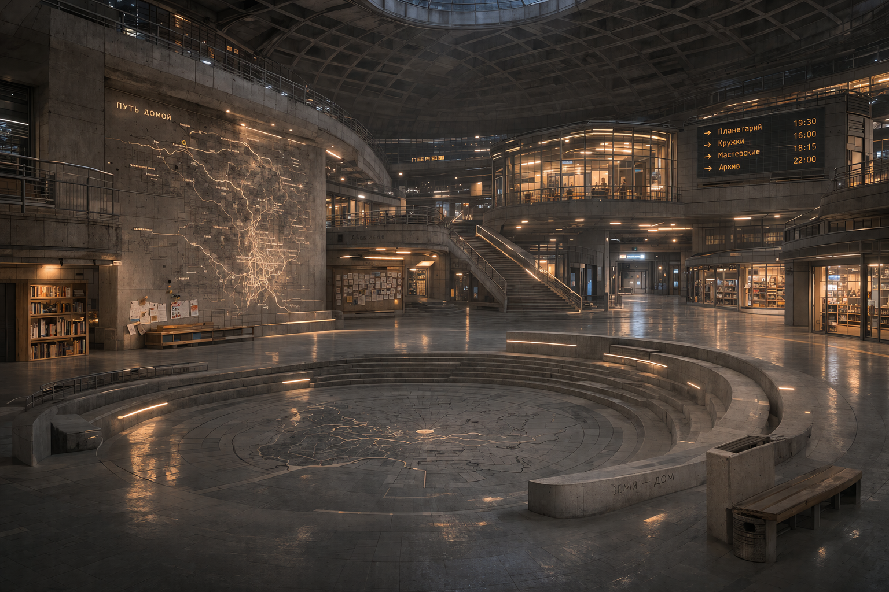
Центры социальной жизни: рекреация, память, транспортные узлы и коммуникационные зоны.
Агробиологические зоны
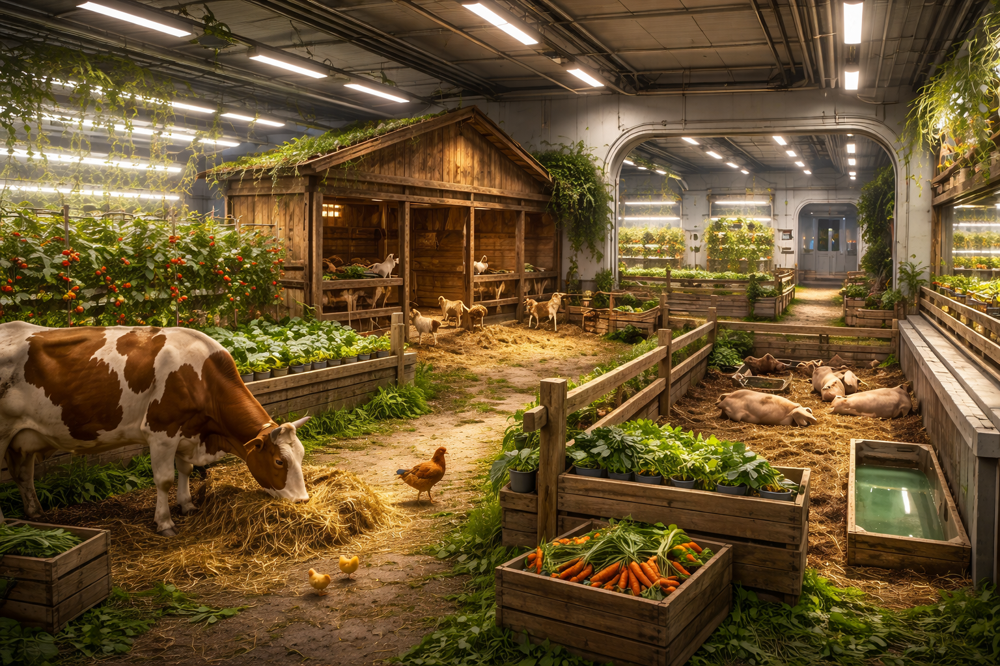
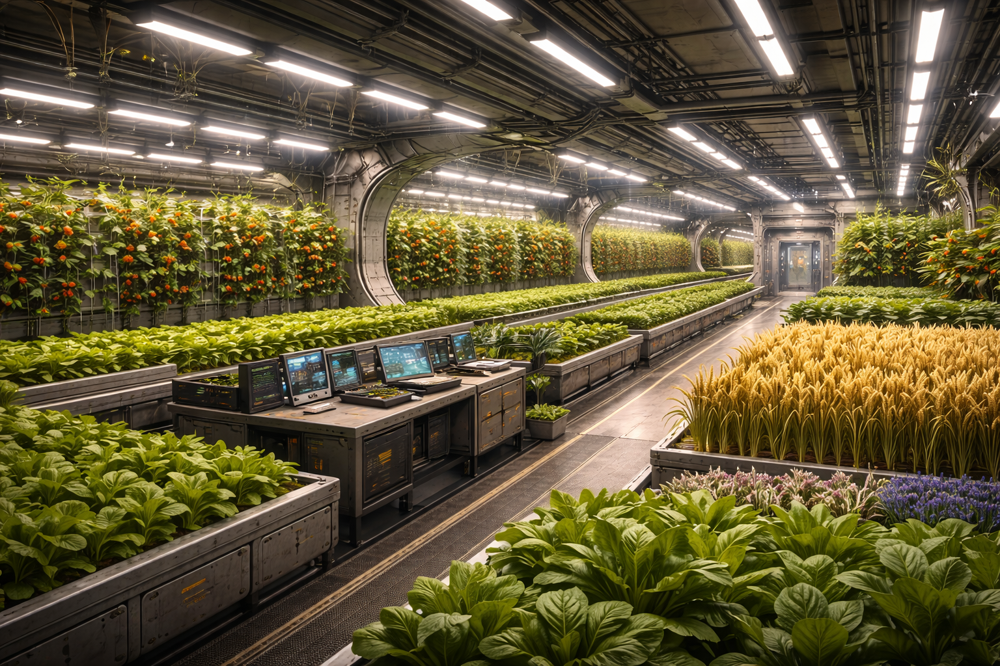
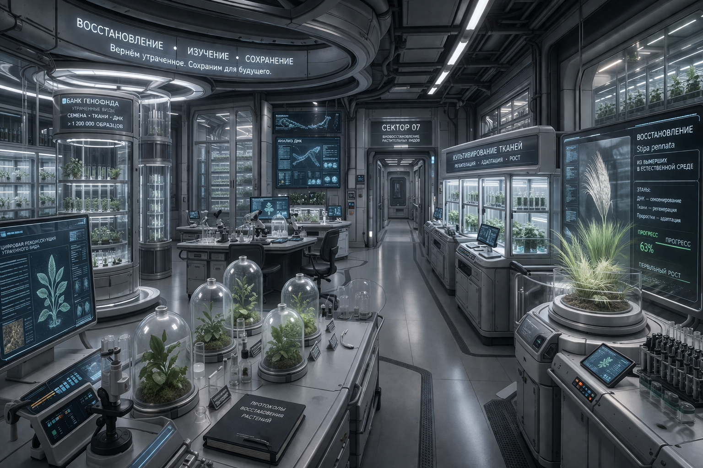
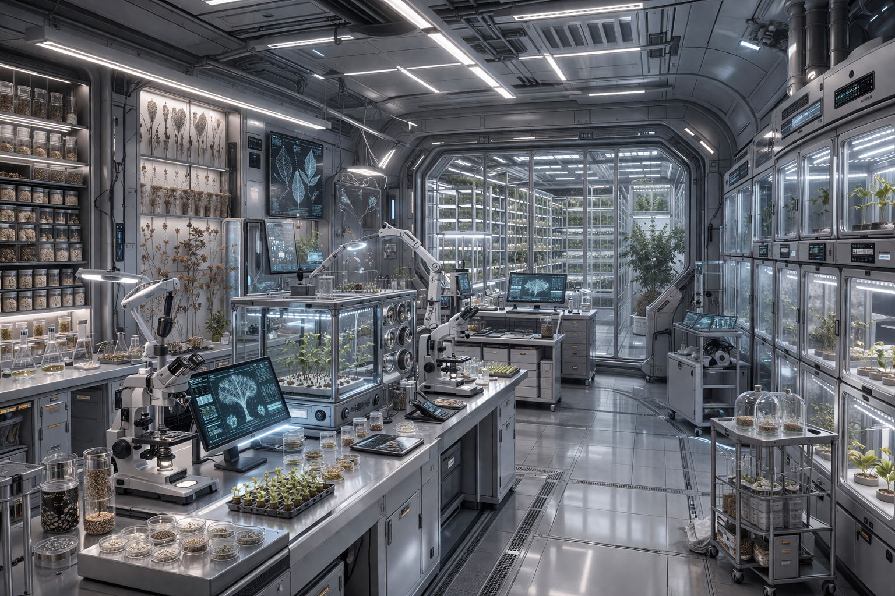
Производство пищи и поддержание ограниченной экосистемы внутри ковчега.
ОСОБЕННОСТИ СРЕДЫ
Растительность внутри ковчега носит ограниченный характер.
В связи с глобальной деградацией флоры на поверхности планеты, большинство привычных видов утрачено либо долго не цветут.
ПРИМЕЧАНИЕ
Представленные изображения могут отличаться от фактического вида внутренних пространств.
Материалы адаптированы для публичного доступа и частично реконструированы архитектурными группами.